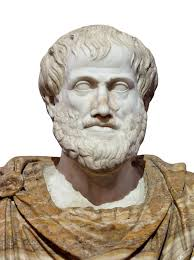
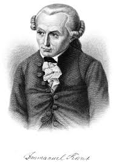

Platón
Ideas, diálogo y justicia: una entrada por textos breves.
Clásico
Rutas de lectura cortas para empezar con autores clásicos y modernos.
Ideas, diálogo y justicia: una entrada por textos breves.
Clásico

Causas, virtud y método: conceptos para organizar argumentos.
Conceptos

Deber, autonomía y razón: una ruta para ética y conocimiento.
Moderno
Dinos qué te interesa (ética, metafísica, conocimiento) y te proponemos una ruta.